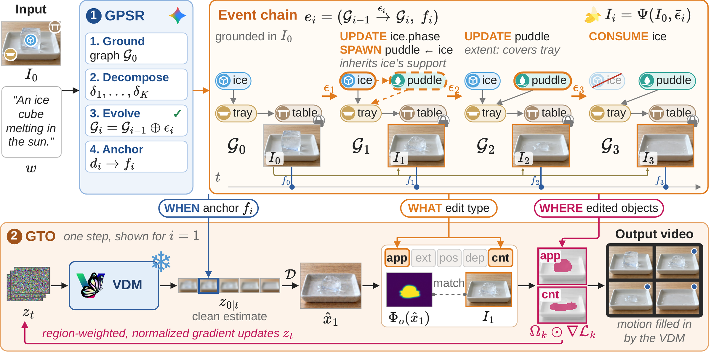
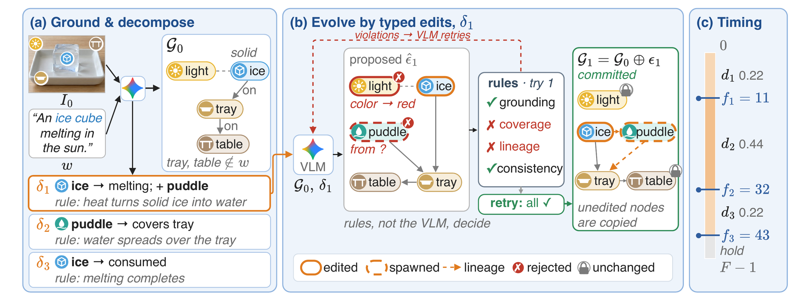

Abstract
Qualitative Comparisons
Same prompt and input frame for every method, played in sync.
Method
A phenomenon specified in words unfolds as sparse, local changes to the physical state of the observed scene. PhysPlan represents it as changes to a state graph grounded in the input frame, and lets the same graph decide what the guidance constrains.
Motivation: two gaps in prompt-derived planning
Overview

Each event in the chain specifies:
1Grounded Physical State Reasoning
A VLM grounds every object in the input frame as a state graph, including objects the prompt never mentions, and decomposes the phenomenon into physical deltas: which object changes, to what state, and by which qualitative rule. Each delta becomes a small set of typed edits (UPDATE, LINK/UNLINK, SPAWN, CONSUME) that are verified before they are committed. The VLM never rewrites the whole scene, so objects that should not change stay unchanged.

Worked example: “an ice cube melting in the sun”
2Graph-Guided Test-Time Optimization
A keyframe contains more than the graph specifies, such as the exact contour of a puddle. Instead of matching it pixel by pixel, PhysPlan compares the video with each keyframe only on the properties selected by the edits, and updates it only in the regions of the edited objects.
Each edit type selects what is measured
Results
Training-free on top of CogVideoX-I2V-5B, compared with the strongest guided image-to-video methods.
Physical plausibility
PhyGenBench (PCA score)
Physics-IQ (score)
Visual quality, preference, and cost
Ablation: both gaps matter
Per-domain results, VBench dimensions, the user-study protocol, failure analysis, and the full cost breakdown are in the paper.